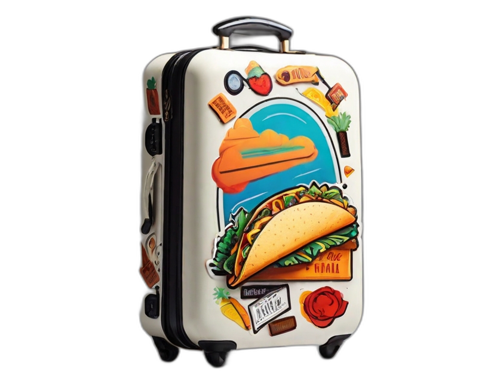
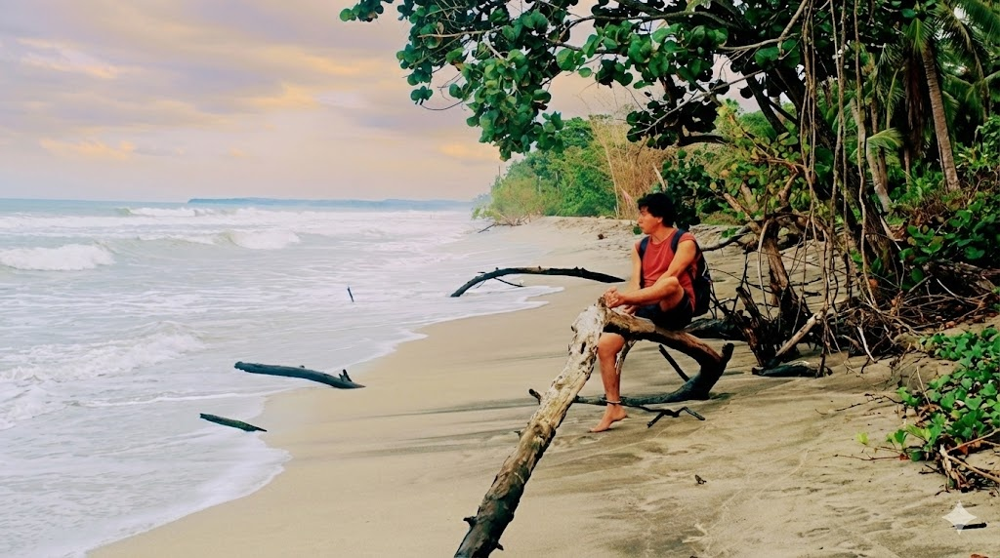
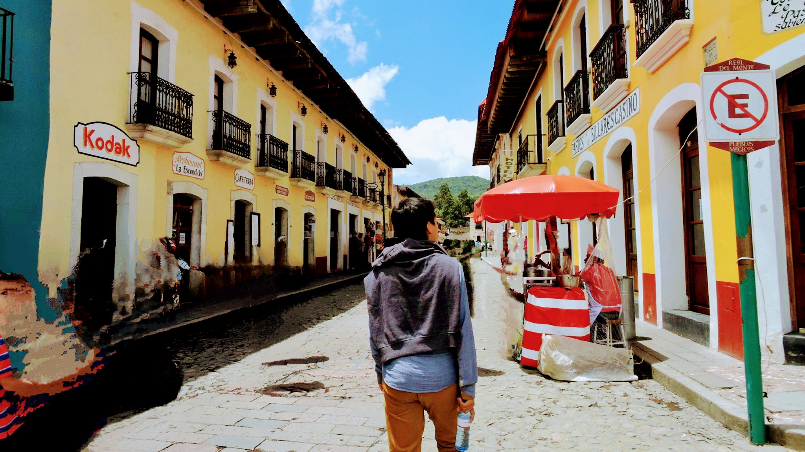

Web app · Restaurants & Taquerías
El Tizón
Mission-critical administrative system: table management, kitchen orders, counter sales, delivery, inventory, suppliers and daily register closing in one unified flow.

Taco Viajero Let's talk
I am Juan Antonio Nuñez. I am also Taco Viajero. I build software, administrative systems and web tools to solve real business operations, with the mindset of someone who travels, observes and works remotely.
Software products
I do not build abstract mockups. I turn operational requirements and real business rules into dependable code, useful screens and reliable workflows that can be sustained, measured and scaled.
Web app · Restaurants & Taquerías
Mission-critical administrative system: table management, kitchen orders, counter sales, delivery, inventory, suppliers and daily register closing in one unified flow.
Web app · Sports Leagues & Tournaments
Sports league management platform: team and player rosters, match schedules, scorekeeping, automated standings, player cards, sanctions and fee tracking.
Interactive software · Desktop & Web
Development environment built with Tauri, Vite and TypeScript to capture, link hotspots, preview and render immersive 360 virtual tours for physical spaces and hospitality.
What I help with?
Tailored web development, technical upgrades, API integrations and task automation so your business works smoothly without relying on scattered notes or manual overhead.
Task structure, clear documentation, measurable deliverables and aligned workflows. I focus on ensuring that projects are not only planned, but actually move forward and deliver.
Turnkey virtual 360 tour capture and publishing for hospitality, vacation rentals, real estate and commercial venues that need to be visited before arriving in person.
Explore HomeTours360Gallery

Local Mexico City project
Trusted private driver and local companion service in Mexico City, tailored for visitors who want to navigate and explore the city safely with someone who truly knows it and lives it.
Learn about Juanito Beep BeepAbout me
I am from Mexico City. I studied Computer Systems Engineering at IPN and International Relations at UNAM. My professional path combines software development, administration, project management, data analysis, web platforms, digital marketing and podcast production. Taco Viajero is where I bring that technical foundation together with the way I see the world.
Technology, operations, data, web, content and software projects.
Contact